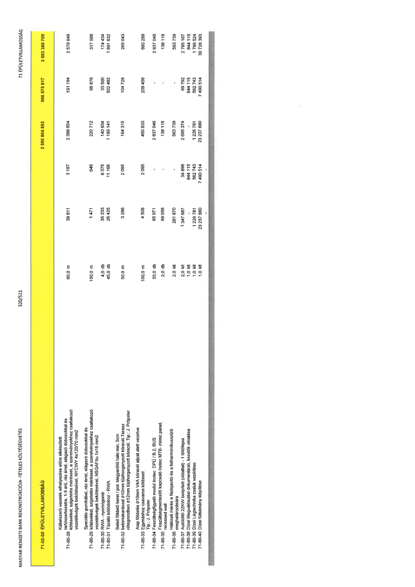

| Tétel | Menny. | Egys. | Anyag e.ár (net HUF) | Díj e.ár (net HUF) | Anyag összesen (net HUF) | Díj összesen (net HUF) | Anyag+Díj összesen (net HUF) |
|---|---|---|---|---|---|---|---|
| 71-00-00 ÉPÜLETVILLAMOSSÁG | NaN | NaN | 0 | 0 | 2 586 804 892 | 996 575 817 | 3 583 380 709 |
| Kábelszerű vezeték elhelyezése előre elkészített tartószerkezetre, 1-5 erű, réz érrel, elágazó dobozokkal és kötésekkel, szigetelés méréssel, a szerelvényekhez csatlakozó vezetékvégek bekötésével, NYCWY 4x120/70 mm2 | 0 | 0 | 0 | 0 | 0 | 0 | 0 |
| 71-80-28 | 60,0 | m | 39 811 | 3 187 | 2 388 654 | 191 194 | 2 579 848 |
| Speciális gumikábel, réz érrel, elágazó dobozokkal és kötésekkel, szigetelés méréssel, a szerelvényekhez csatlakozó vezetékvégek bekötésével, NSGAFöu 1x16 mm2 | 0 | 0 | 0 | 0 | 0 | 0 | 0 |
| 71-80-29 | 150,0 | m | 1 471 | 646 | 220 712 | 96 876 | 317 588 |
| RWA - nyomógomb | 0 | 0 | 0 | 0 | 0 | 0 | 0 |
| 71-80-30 | 4,0 | db | 35 233 | 8 375 | 140 934 | 33 500 | 174 434 |
| Tűzálló kötődoboz - RWA | 0 | 0 | 0 | 0 | 0 | 0 | 0 |
| 71-80-31 | 45,0 | db | 26 425 | 11 166 | 1 189 141 | 502 492 | 1 691 632 |
| Belső földelő keret / pot. kiegyenlítő háló min. 5cm betontakarással Ø10mm tüzihorganyzott köracél. Terasz rétegrendben Ø12mm tüzihorganyzott köracél. Tip.: J. Pröpster | 0 | 0 | 0 | 0 | 0 | 0 | 0 |
| 71-80-32 | 50,0 | m | 3 286 | 2 095 | 164 315 | 104 728 | 269 043 |
| Alap földelés Ø10mm V4A köracél aljzat alatt vezetve Egymáshoz csavaros kötéssel Tip.: J. Pröpster | 0 | 0 | 0 | 0 | 0 | 0 | 0 |
| 71-80-33 | 100,0 | m | 4 508 | 2 095 | 450 833 | 209 456 | 660 289 |
| Feszültségfigyelő modul Inotec DPÜ / B.2, BUS | 0 | 0 | 0 | 0 | 0 | 0 | 0 |
| 71-80-34 | 33,0 | db | 85 971 | 0 | 2 837 046 | 0 | 2 837 046 |
| Feszültségmentesítő kapcsoló Inotec MTB- mimic panel, recessed wall | 0 | 0 | 0 | 0 | 0 | 0 | 0 |
| 71-80-35 | 2,0 | db | 69 058 | 0 | 138 116 | 0 | 138 116 |
| Hálózati mérés a fázisjavító és a felharmonikusszűrő meghatározására | 0 | 0 | 0 | 0 | 0 | 0 | 0 |
| 71-80-36 | 2,0 | klt | 281 870 | 0 | 563 739 | 0 | 563 739 |
| Autótöltő 22KW beépített (oldalfali) - 1 töltőfejes | 0 | 0 | 0 | 0 | 0 | 0 | 0 |
| 71-80-37 | 2,0 | klt | 1 347 687 | 34 896 | 2 695 374 | 69 792 | 2 765 167 |
| Dízel Megvalósulási dokumentáció, kezelők oktatása | 0 | 0 | 0 | 0 | 0 | 0 | 0 |
| 71-80-38 | 1,0 | klt | 0 | 844 115 | 0 | 844 115 | 844 115 |
| Dízel Légtechnika zsaluk vezérlése | 0 | 0 | 0 | 0 | 0 | 0 | 0 |
| 71-80-39 | 1,0 | klt | 1 226 781 | 562 743 | 1 226 781 | 562 743 | 1 789 524 |
| Dízel fűtőkémény kiépítése | 0 | 0 | 0 | 0 | 0 | 0 | 0 |
| 71-80-40 | 1,0 | klt | 23 237 880 | 7 490 514 | 23 237 880 | 7 490 514 | 30 728 393 |
